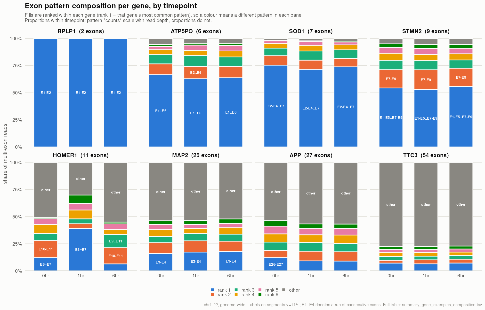

Last updated: 2026-09-18
Checks: 1 1
Knit directory: long_read_rna/
This reproducible R Markdown analysis was created with workflowr (version 1.7.1). The Checks tab describes the reproducibility checks that were applied when the results were created. The Past versions tab lists the development history.
The R Markdown file has unstaged changes. To know which version of
the R Markdown file created these results, you’ll want to first commit
it to the Git repo. If you’re still working on the analysis, you can
ignore this warning. When you’re finished, you can run
wflow_publish to commit the R Markdown file and build the
HTML.
Great! You are using Git for version control. Tracking code development and connecting the code version to the results is critical for reproducibility.
The results in this page were generated with repository version c93c373. See the Past versions tab to see a history of the changes made to the R Markdown and HTML files.
Note that you need to be careful to ensure that all relevant files for
the analysis have been committed to Git prior to generating the results
(you can use wflow_publish or
wflow_git_commit). workflowr only checks the R Markdown
file, but you know if there are other scripts or data files that it
depends on. Below is the status of the Git repository when the results
were generated:
Unstaged changes:
Modified: analysis/data_summary.Rmd
Modified: analysis/exon_structure.Rmd
Note that any generated files, e.g. HTML, png, CSS, etc., are not included in this status report because it is ok for generated content to have uncommitted changes.
These are the previous versions of the repository in which changes were
made to the R Markdown (analysis/exon_structure.Rmd) and
HTML (docs/exon_structure.html) files. If you’ve configured
a remote Git repository (see ?wflow_git_remote), click on
the hyperlinks in the table below to view the files as they were in that
past version.
| File | Version | Author | Date | Message |
|---|---|---|---|---|
| Rmd | c93c373 | XSun | 2026-09-17 | update |
| html | c93c373 | XSun | 2026-09-17 | update |
Genome-wide, all three timepoints, restricted to chr1–chr22.
Reads analysed (multi-exon, chr1–22): 8.37 M / 11.06 M / 11.47 M at 0 / 1 / 6 hr.
Scripts: 4.read_structure/ —
0.build_exon_model.R (stage A),
1.annotate_read_structure.py (stage B),
7.summarise_levels.R (summaries).
data/reference/OUT.extended_annotation.gtf (266 MB,
IsoQuant extended):
chr21 IsoQuant exon 5086740 5087232 . + . gene_id "ENSG00000289905";
transcript_id "ENST00000701545"; exon "1"; exon_id "chr21.15229";
gene_name "ENSG00000289905";Only exon and gene lines are used.
A1. Read every exon record, grouped by
gene_id. The same physical exon appears once per
transcript, so records overlap heavily.
A2. Flatten — merge overlapping exons within
each gene into non-overlapping blocks
(GenomicRanges::reduce). On chr21 this takes 19,557 exon
records down to 3,870 blocks.
A3. Number them 5′→3′, reversing the order on minus-strand genes.
A4. Count transcript support — how many of the gene’s transcripts contain each flattened block. This is what later separates real exon skipping from annotation clutter.
exon_model_chr21.tsv.gz — one row per flattened
exon:
contig gene_id gene_name strand exon_number start end width n_tx n_tx_total is_minor
chr21 ENSG00000154723 ATP5PF - 8 25716503 25716560 58 1 8 TRUE
chr21 ENSG00000154723 ATP5PF - 6 25724480 25724677 198 6 8 FALSE
chr21 ENSG00000154723 ATP5PF - 5 25724698 25725350 653 8 8 FALSEColumn meanings: n_tx_total is how many transcripts the
gene has; n_tx is how many of those
contain this flattened exon; is_minor is
n_tx < 2. So for ATP5PF (8 transcripts), E5 at 8/8 is
constitutive, while E3 at 1/8 exists in a single isoform.
34.7% of chr21 flattened exons are “minor” — in
exactly one transcript. For contrast only 23.2% are constitutive.
n_tx = 1 is the largest single bin, which is why the
genuine/minor distinction below exists.
Merging exons across isoforms means alternative splice sites disappear. If two isoforms use different acceptors for the same exon, they fuse into one block, and a read using the inner acceptor is indistinguishable from one using the outer. So this model can describe exon skipping and intron retention, but is blind to A5SS / A3SS / MXE events.
Each read is described by which flattened exons it covers and how consecutive covered exons are joined:
E1-E2 spliced onto the next exon
E1-E4 spliced, bypassing exons in between
E1=E2 alignment continuous through the intron (intron retained)
E1~E2 gap is < 70 bp -- an annotation artifact, not an intron
E4 single exon, no junctionIn figures, runs of consecutive exons are collapsed for readability:
E1-E2-E3-E4-E5-E6 is shown as E1..E6, and
E2-E4-E5-E6 as E2-E4..E6. A run is only
collapsed across - links, so = and
~ stay visible.
A read is decomposed into its links, not given one
label. E1-E2-E4-E7 contributes three:
| from → to | link | step | event |
|---|---|---|---|
| E1 → E2 | - |
1 | consecutive |
| E2 → E4 | - |
2 | skip (bypasses E3) |
| E4 → E7 | - |
3 | skip (bypasses E5, E6) |
“Step” = the gap in exon numbering, not the exon number. It is our own term, not standard usage — the field calls these splice junctions, and step > 1 is an SE (skipped exon) event.
Patterns themselves do not aggregate — TTC3 alone produces 906 distinct ones, most with ~2 reads. So the summary is built at three levels.
Definition. One row per exon-to-exon link. A read covering n exons contributes n−1 links. Each link is exactly one of five types, so the column sums to 100%.
| Event | Definition | 0 hr | 1 hr | 6 hr |
|---|---|---|---|---|
| Consecutive junction | spliced onto the adjacent flattened exon (step = 1) | 76.03 | 75.58 | 75.45 |
| Minor-exon bypass | spliced over exon(s) present in < 2 transcripts | 11.24 | 11.63 | 11.54 |
| Genuine exon skip | spliced over exon(s) present in ≥ 2 transcripts | 8.44 | 8.93 | 8.94 |
| Retained intron | ≥ 50% of the intervening region covered, gap ≥ 70 bp | 1.94 | 1.79 | 1.99 |
| Artifact gap | gap between flattened exons is < 70 bp | 2.34 | 2.08 | 2.08 |
This is the headline summary: five numbers, whole dataset, comparable across timepoints.
Why the artifact-gap row exists. Human spliceosomal introns are essentially never shorter than 50–70 bp, so a sub-70 bp gap between two flattened exons is not an intron — it is one real exon split in two by a novel IsoQuant transcript. Any read crossing such a gap is trivially “≥50% covered” and was previously scored as a retained intron.
HOMER1 is the case that exposed it: a 38 bp gap between its flattened exons 6 and 7, created by
transcript12951.chr5.nnic, generated 462 spurious retention calls at 1 hr and made HOMER1 look like a dramatic activity-dependent retention event. It is not one.Excluding these gaps cut retention by 21% (2.46% → 1.94%). They are reported as their own row rather than folded into another category or dropped from the denominator.
The minor/genuine split is essential. Pooling them gives ~19.7% “skipping”, but only 8.4% survives the filter — the artifact is larger than the signal.
SON E1-E2-E4is the single most common pattern on chr21 and is the canonical SON structure; it looks like a skip only because SON’s flattened exon 3 is 39 bp and appears in 1 of 23 transcripts.
“Minor” means the bypassed exon is in < 2
transcripts (is_minor in the exon model). That cutoff is a
judgement call, and the skip count is sensitive to it. Sweeping it on
chr21:
| Threshold | Genuine skips | Minor bypasses | % called genuine |
|---|---|---|---|
| ≥1 (no filter) | 59,867 | 0 | 100.0% |
| ≥2 (used here) | 17,005 | 42,862 | 28.4% |
| ≥3 | 11,241 | 48,626 | 18.8% |
| ≥5 | 7,002 | 52,865 | 11.7% |
| ≥10 | 3,240 | 56,627 | 5.4% |
There is no plateau, so the absolute genuine-skip rate is a function of the cutoff. What is defensible is the 1→2 step, which removes 72% of skip calls — those are annotation singletons, exons supported by one isoform only, the weakest possible evidence that the exon exists. Excluding them is principled; everything beyond 2 is a continuum with no natural break.
Read 8.44% as “the skipping rate after excluding annotation singletons”, not as a precise quantity. Comparisons across timepoints and donors stay valid because the threshold is held constant.
Definition. Percent of multi-exon reads carrying at least one of each feature. These are non-exclusive — a read can carry several, so the column does not sum to 100%.
| Feature | 0 hr | 1 hr | 6 hr |
|---|---|---|---|
| ≥1 consecutive junction | 83.98 | 84.05 | 83.41 |
| ≥1 minor-exon bypass | 25.84 | 26.54 | 26.75 |
| ≥1 genuine exon skip | 19.84 | 20.87 | 21.21 |
| ≥1 retained intron | 4.80 | 4.39 | 4.96 |
| carries ≥2 different features | 31.57 | 32.39 | 32.66 |
That last row is why a single per-read label is misleading:
about a third of multi-exon reads carry more than one kind of
event. The class column in the per-read output
resolves this by precedence
(MIXED > RETAINED > SKIP > SKIP_MINOR > CONSECUTIVE),
so it reports only the highest-priority feature. Use the count columns,
not class, for anything quantitative.
Definition. Full patterns, restricted to genes with ≤10 exons and ≥500 reads. Patterns are only interpretable where a few of them cover most reads — which is true for short genes and false for long ones:
| Gene size | Reads | Distinct patterns | Reads in top pattern | Reads per pattern |
|---|---|---|---|---|
| ≤10 exons | 4.36 M | 2,729 | 539,460 | 1,599 |
| 11–19 exons | 1.98 M | 23,211 | 57,551 | 85 |
| 20+ exons | 2.02 M | 77,403 | 48,543 | 26 |
For short genes a pattern is effectively an isoform readout. For 20+ exon genes there are 28 reads per pattern — no individual pattern has power, and the right unit there is the junction.
Top patterns at 0 hr (chr1–22, ≤10 exons, excluding novel genes):
| Gene | Exons | Pattern | Class | Reads |
|---|---|---|---|---|
| RPLP1 | 2 | E1-E2 | CONSECUTIVE | 68,479 |
| TMSB10 | 4 | E2-E3-E4 | CONSECUTIVE | 48,693 |
| RPS8 | 3 | E1-E2-E3 | CONSECUTIVE | 33,274 |
| RPS18 | 3 | E1~E2-E3 | CONSECUTIVE | 31,948 |
| TAGLN | 4 | E3-E4 | CONSECUTIVE | 30,945 |
| RPL27A | 4 | E1-E2-E3 | CONSECUTIVE | 29,989 |
| RPS19 | 9 | E2-E3-E4-E7-E8-E9 | SKIP_MINOR | 29,210 |
| STMN2 | 9 | E1-E5-E6-E7-E9 | SKIP_MINOR | 28,669 |
| TPT1 | 2 | E1-E2 | CONSECUTIVE | 28,308 |
| MYL6 | 5 | E1-E2 | CONSECUTIVE | 24,365 |
| RPL34 | 5 | E1~E2-E3 | CONSECUTIVE | 23,366 |
| RPL19 | 3 | E2-E3 | CONSECUTIVE | 22,872 |
Dominated by ribosomal protein genes — short, very highly expressed, and consistently fully spliced. That is a reassuring sanity check rather than a finding.
Note RPS18 and RPL34, whose top patterns contain ~: both
have a sub-70 bp gap between their flattened exons 1 and 2, which was
being counted as a real junction before the filter. Even in the cleanest
examples the annotation carries artifacts.
Eight genes spanning the range of exon counts — chosen to show the range of behaviour, not for biology.

| Gene | Exons | Reads 0/1/6 hr | Distinct patterns 0/1/6 hr |
|---|---|---|---|
| RPLP1 | 2 | 68,490 / 53,825 / 57,524 | 2 / 2 / 2 |
| ATP5PO | 6 | 2,702 / 4,477 / 4,157 | 30 / 27 / 29 |
| SOD1 | 7 | 4,648 / 6,373 / 6,676 | 18 / 27 / 23 |
| STMN2 | 9 | 52,728 / 80,426 / 73,011 | 52 / 50 / 50 |
| HOMER1 | 11 | 223 / 1,236 / 737 | 34 / 63 / 50 |
| MAP2 | 25 | 4,764 / 7,832 / 7,601 | 227 / 270 / 297 |
| APP | 27 | 10,543 / 12,966 / 13,998 | 465 / 426 / 495 |
| TTC3 | 54 | 8,265 / 13,566 / 15,924 | 906 / 1,202 / 1,350 |
Pattern fragmentation scales with exon count. RPLP1 has two exons, one pattern, and it holds 100% of reads. TTC3 has 54 exons and 78% of its reads sit in “other” — no single structure dominates. ATP5PO and SOD1 sit in between with one pattern at 65–75%.
Two cautions:
E6~E7
— an annotation artifact, kept here deliberately as the cautionary case.
Before the minimum-intron filter it read as E6=E7 and
looked like a striking activity-dependent retention event.The pattern is not a complete record of a read’s
splicing. Comparing our link count against the CIGAR’s
N operations, 13.4% of multi-exon reads contain
more junctions than the pattern records — junctions falling
inside a merged exon block, or outside the range of covered exons, are
invisible. For junction-level quantification use the
n_junc_annot / n_junc_novel columns, which
come straight from the CIGAR.
Long steps are not credible. The step distribution has a thin tail out to 53 (one junction bypassing 52 exons), which is mismapping rather than biology. ~0.9% of spliced steps are step ≥ 7. Any skipping analysis should require annotated junctions or cap the step size.
Novel-junction rates are not yet reportable. 27% of spliced reads look all-novel, which is implausible given the annotation already contains 22,490 novel transcripts. The likely cause is the 5 bp junction-matching tolerance against ~1.1% ONT error; it needs calibrating against GT-AG motifs first.
Timepoint differences are small and donor-pooled. Genuine skipping rises 8.44 → 8.94% and retention dips at 1 hr, but donors are pooled here. These need testing within donors before they mean anything.
Level 1 and Level 2 are descriptive QC. For statistics — comparing timepoints or donors — use junction counts or PSI (percent spliced in) rather than patterns or classes, which is what rMATS / LeafCutter / isoLASER all do and what reviewers will expect.